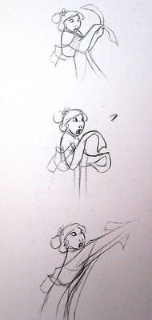
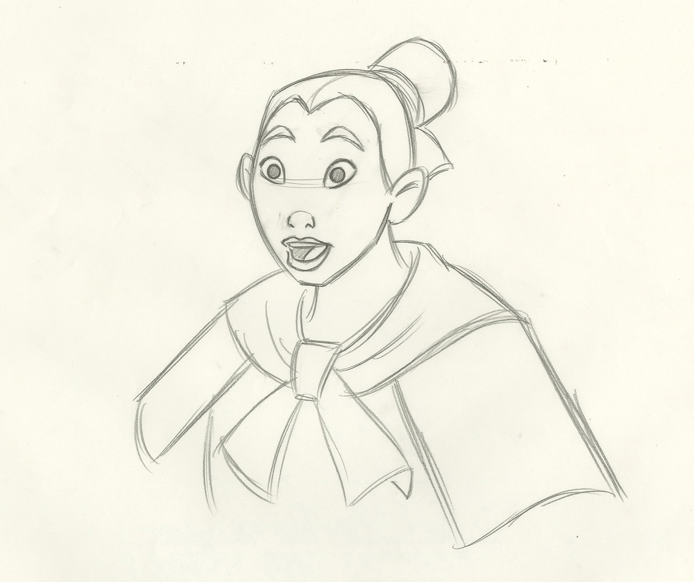
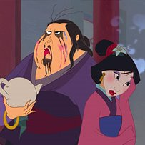
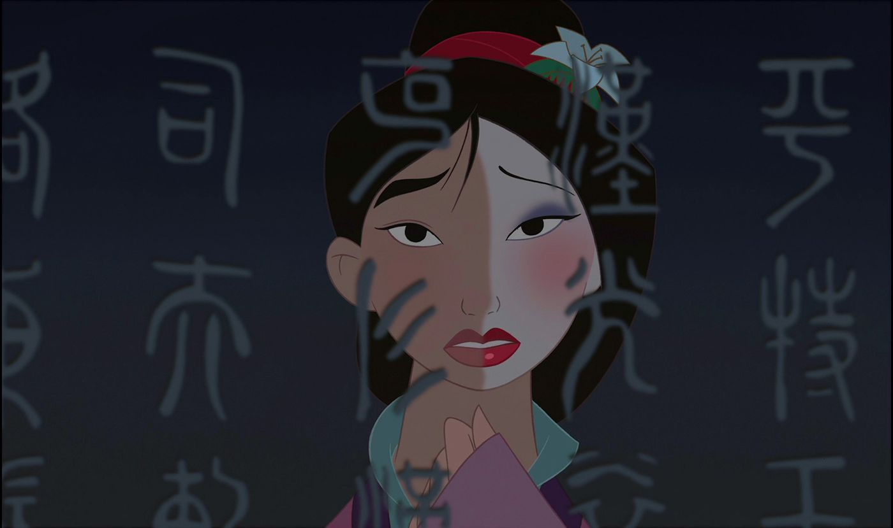
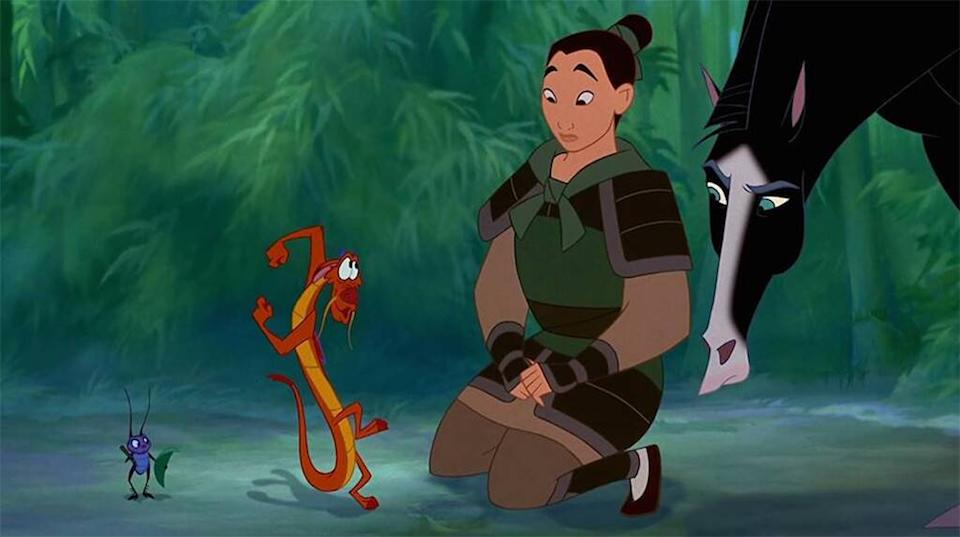
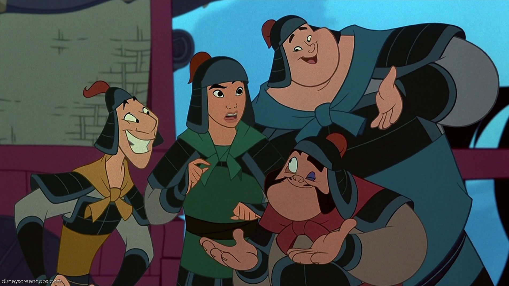
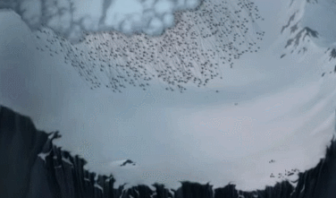
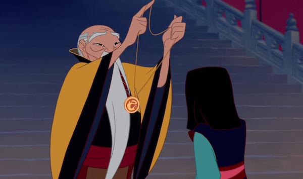

Welcome! You have found the (un)official webpage of Disney's first Mulan movie. We come here to wallow in the mastery of everyone's favourite
animated warrioress. Browse around to learn more, and sign up for our newsletter to stay up to date. Keep scrolling to see more or use the menue
at the top of the page! Mushu will help you through your stay here!
Keep scrolling!
PRODUCTION

Mulan is a 1998 American animated musical adventure film produced by Walt Disney Feature Animation for Walt Disney Pictures. It is based on the
Chinese legend of Hua Mulan, and was Disney's 36th animated feature and the ninth animated film produced and released during the Disney Renaissance.
It was directed by Barry Cook and Tony Bancroft, with story by Robert D. San Souci and screenplay by Rita Hsiao, Chris Sanders, Philip LaZebnik,
Raymond Singer, and Eugenia Bostwick-Singer.

Mulan was the first of three features produced primarily at the Disney animation studio at Disney-MGM Studios (now Disney's Hollywood Studios) in
Bay Lake, Florida. Development for the film began in 1994, when a number of artistic supervisors were sent to China to receive artistic and cultural
inspiration. Mulan was well received by critics and the public who praised the animation, plot, characters (particularly the title character), and
musical score, and grossed over $304 million, making it the second-highest grossing family film of the year. It earned a Golden Globe and Academy
Award nomination and won several Annie Awards, including Best Animated Feature. It was then followed by Mulan II in 2004, a direct-to-video sequel.
A live-action adaptation directed by Niki Caro was released on September 4, 2020.
It took five years for Mulan to be completed by 700 animators, artists and technicians.
PLOT

The Huns, who are led by the ruthless Shan Yu, invade imperial China by breaching the Great Wall. In the Imperial City, the Emperor orders a general
mobilization, with conscription notices requiring one man from each family to join the Imperial Chinese Army. To the South, Fa Mulan is an adventurous
and active young woman to the dismay of her family, who hope for her to bring honor to the family. She is arranged to meet a matchmaker to demonstrate
her fitness as a future wife; but following a few mishaps, the matchmaker deems her a disgrace to the family.

Mulan's elderly father Fa Zhou - the only man in their family and an army veteran - is conscripted into the army. She tries to dissuade him from going,
but he protests that he must do his duty. Fearing for his life, she cuts her hair and takes her father's sword and armor, disguising herself as a man
so that she can enlist in his stead. Quickly learning of her departure, Mulan's grandmother prays to the family's ancestors for Mulan's safety. In the
local temple, Mushu, a small red dragon, is a disgraced former family guardian who is demoted to the role of awakening the spirits of the ancestors.
The Great Ancestor decides that the "most powerful of all," a massive stone dragon guardian, should guide Mulan; and sends Mushu to wake him. After
accidentally destroying the guardian's statue, Mushu travels to Mulan's aid himself, desiring to redeem himself to the ancestors by making Mulan a war
hero.

Reporting to the training camp, Mulan passes as a man named "Fa Ping", with Mushu providing encouragement and clumsy guidance throughout her deception.
Under the command of Captain Li Shang, she and her fellow recruits—including Yao, Ling, and Chien-Po—gradually become trained soldiers, but the Emperor's
belligerent counsel, Chi-Fu, threatens to dissuade the Emperor from allowing Shang's men to fight. Mushu then crafts a fake letter from Shang's father,
General Li, ordering Shang to follow the main imperial army into the mountains. The reinforcements set out and arrive at a burnt village, discovering that
the Huns have massacred General Li and his troops.

As the soldiers march up a mountain pass, they are ambushed by the Huns. Mulan cleverly uses a Huolongchushui cannon to cause an avalanche, which buries
the entire Hun army. Angered, Shan Yu wounds Mulan during the battle, and her deception is revealed when the wound is bandaged. Instead of executing Mulan

as the law requires, Shang spares her life and expels her from the army. Mulan is left behind as the other soldiers depart for the Imperial City to report
the Huns' defeat. However, Shan Yu and several of his warriors have survived, and Mulan sees them heading towards the city.
Mulan enters the city and warns Shang. The Huns then capture the Emperor and seize the palace. Mulan, Yao, Ling, Chien-Po, and Shang enter the palace and
defeat Shan Yu's men. Shang prevents Shan Yu from assassinating the Emperor, and Mulan lures the Hun leader onto the roof, where she pins him there with
his own sword. Acting on Mulan's instructions, Mushu fires a large skyrocket at Shan Yu; the rocket strikes and propels Shan Yu into a fireworks launching
tower, where he dies in the resulting explosion.

The Emperor initially reprimands Mulan, but then he and the city's assembled inhabitants praise her for having saved them, and they bow to her in honor.
She accepts the Emperor's crest and Shan Yu's sword as gifts but politely declines his offer to be on his royal council and asks to return to her family.
Mulan returns home and presents these gifts to her father, but he is happy to have her back. Having become enamored with Mulan, Shang also arrives and accepts
her invitation to stay for dinner. Mushu is reinstated as a Fa family guardian as the ancestors celebrate.
FUN FACTS
Mulan has the highest kill count of any Disney character, including villains.
She does wipe out a whole army in a single avalanche...
The movie is based on a poem
The legend of Mulan is more than 1500 years old and the poem is called the Ballad of Mulan. The poem was originally part
of a collection of lyrics and songs that no longer exists, so tracing the origin is a little difficult.
Mulan's not actually a princess
We would be the first to add our hero to any princess list (diversity and all) but she's not actually a princess. Mulan
joins the army and then was honoured by the Emperor so only becomes a 'sort of princess', but she has no title. We prefer her as a em, independent woman anyway.
Mulan is the first Disney animated film to openly deal with war